4．积分
牛顿的著作表明面积可以通过把微分法反过来求得。当然这仍是本质的方法。莱布尼茨关于把面积或体积看作是诸如矩形或柱体微元的“和”的思想［定积分］被忽视了。在18世纪当微元“和”的概念多少被采纳时，使用这些概念也是很不严谨的。
柯西强调把积分定义为和的极限来代替把积分看作是微分法的逆运算。这个改变至少有一个主要的理由。我们知道，傅里叶处理过间断函数，而傅里叶级数的系数公式是
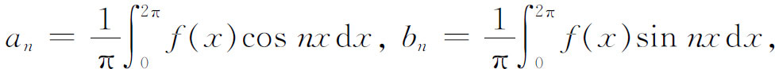
这就要求间断函数的积分。傅里叶把积分看成一个和（莱布尼茨的观点），因此处理即使是间断的f（x）也没有什么困难。但是当f（x）是间断函数时，必须考虑积分的解析含义的问题。
柯西在他的《概论》（1823）中对定积分作了最系统的开创性工作，在书中他也指出在人们能够使用定积分、原函数之前，必须确立定积分的存在，以及间接地确立反导数或原函数的存在。他从连续函数开始。
他对连续函数f（x）给出了定积分作为和的极限的确切定义(25)。如果区间［x0，X］为x的值
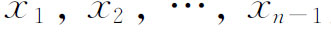
所分割，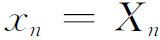
，则积分是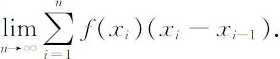
定义中事先假设f（x）在［x0，X］上连续以及最大子区间的长度趋于零，这个定义是算术性的。柯西证明了无论怎样选取xi，积分都存在。但由于他没有一致连续性的概念，他的证明是不严密的。他用傅里叶建议的记号
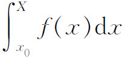
来代替欧拉对反微分法经常使用的记号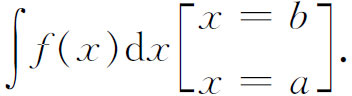
接着柯西定义
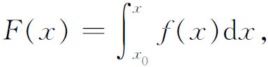
且证明F（x）在［x0，X］上连续。置
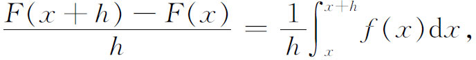
并利用积分中值定理，柯西证明了
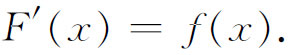
这就是微积分基本定理。柯西的表示方法是微积分基本定理的第一个证明。在证明了给定函数f（x）的全体原函数彼此只差一个常数之后，他把不定积分定义为
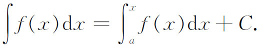
他指出，若假定f′（x）连续，则
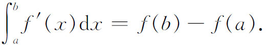
然后柯西论述了在积分区间的某些值x处f（x）变为无穷或积分区间趋于∞时的奇异（反常）积分。对于f（x）在x＝c点不连续，而在这点处f（x）可以有界也可以无界的情形，柯西把反常积分定义为
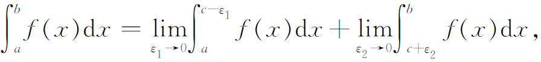
只要右端的极限存在，当ε1＝ε2时我们就得到柯西所谓的主值。
曲线所界区域的面积、曲线的长度、曲面所界区域的体积，以及曲面的面积等概念，已经作为直观的理解而被人们接受了，而这些量能用积分来计算已被看作是微积分重大成就之一。但是柯西为了和他的算术化分析的目标相一致，他用计算这些量而建立起来的积分公式来定义这些几何量。由于积分公式把限制强加给被积函数，所以柯西已在无意中对他所定义的概念加上了一种限制。例如由y＝f（x）表示的曲线的弧长公式是
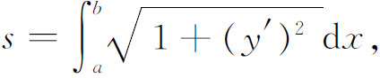
而在这个公式中事先假定了f（x）是可微的。至于面积、曲线长度和体积的最一般定义是什么的问题，是后来才提出来的（第42章第5节）。
柯西已经对任何连续函数证明了积分的存在。他也定义了被积函数具有跳跃间断和被积函数为无穷时的积分。但是随着分析的发展，显然需要去研究更不规则的函数的积分。黎曼在他1854年关于三角级数的一篇论文中提出了可积性这个课题。他说，考虑使傅里叶系数的积分公式仍然成立的较宽条件，虽然对物理应用不一定是重要的，但至少对数学是重要的。
黎曼把积分推广到在区间［a，b］上有定义且有界的函数f（x）上去。他把［a，b］分割成子区间(26)
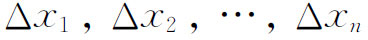
，并把f（x）在Δxi上的最大值和最小值之差定义为f（x）在Δxi上的振幅。然后他证明了当最大的Δxi趋于0时，和式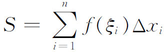
（其中ξi是Δxi中x的任一值）趋于一个唯一的极限（积分存在）的一个必要充分条件是：区间Δxi［在其中f（x）的振幅大于任给的数λ］的总长度必须随着各区间长度的趋于零而趋于零。
然后黎曼指出，关于振幅的这一条件使他可以用具有孤立间断点的函数以及具有到处稠密的间断点的函数来替代连续函数。事实上，他所给出的在每个任意小区间上有无穷多个间断点的可积函数的例子（第3节），是企图说明他的积分概念的一般性。这样，黎曼就在积分的定义中去掉了连续和分段连续的要求。
黎曼在他1854年的论文中给出了在区间［a，b］上有界函数是可积的另一个必要充分条件，但是没有进一步的说明。实际上相当于首先建立现在所谓的上和与下和
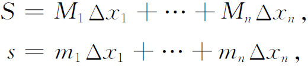
这里，mi和Mi是f（x）在Δxi上的最小值和最大值。然后令
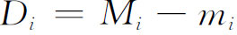
，黎曼指出，当且仅当对于区间［a，b］上Δxi的一切选法都有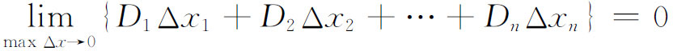
时，f（x）在［a，b］上的积分才存在。达布把黎曼的说法阐述得更加完全，并且证明了这个条件是必要充分的(27)。S有许多值，每一个值与把［a，b］分为Δxi的分划对应。类似地，s也有许多值。每个S叫上和而每个s叫下和。令J是S的下确界，而令I是s的上确界，就得到I≤J。于是达布的定理说：当Δxi的数目无限增加，使最大子区间的长度趋于0时，和S与s分别趋于J与I。如果J＝I，则说有界函数在［a，b］上是可积的。
达布力图证明，一个有界函数f（x）在［a，b］上可积的充要条件是，f（x）的间断点组成一个测度为0的集合。但他所谓间断点集合的测度为0，意思是指间断点可以包含在有限个区间中，而这些区间的总长度是任意小。这种关于可积性条件的确切阐述，也由许多人在同一年（1875）给了出来。沃尔泰拉（Vito Volterra）对S的下确界J引入了上积分这个术语和记号
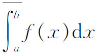
，他还对s的上确界引入了下积分这个术语和记号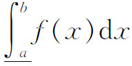
(28)。达布在1875年的论文中还证明在推广了的意义下，可积函数的微积分基本定理成立。博内不用f′（x）的连续性证明了微分学的中值定理(29)。达布利用这个证明（这个证明在现在是标准的）证明了当f′仅在黎曼-达布意义下可积时，
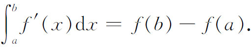
达布的论点是
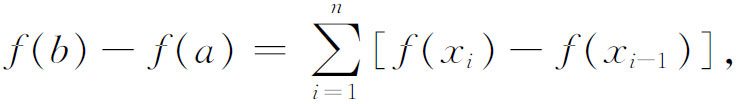
其中
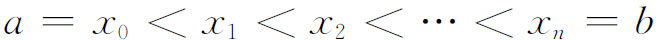
。由中值定理，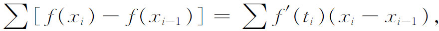
这里ti是
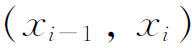
中的某个值。现在若最大的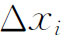
或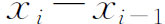
趋于零，则上式的右端趋于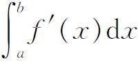
，而左端是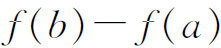
。19世纪70和80年代最受欢迎的活动之一，就是构造各种具有无穷个间断点而在黎曼意义下仍为可积的函数。在这方面，史密斯（Henry J．S．Smith）(30)给出了在黎曼意义下不可积函数的第一个例子，但是这个函数的间断点是“稀疏”的。狄利克雷函数（第2节）也是黎曼意义下不可积的，不过它是处处不连续的。
积分的概念后来推广到了无界函数，还推广到各种广义积分。最有意义的推广是在20世纪由勒贝格做出的（第44章）。然而，就初等微积分而言，到1875年时积分概念就已经建立在充分广阔而严密的基础之上了。
二重积分的理论也解决了。18世纪已经处理过比较简单的二重积分（第19章第6节）。柯西在1814年的论文（第27章第4节）中指出，如果被积函数在积分区域中不连续，则在计算二重积分
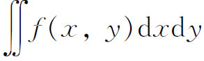
时，积分的次序至关重要。柯西特别指出(31)，当f无界时累次积分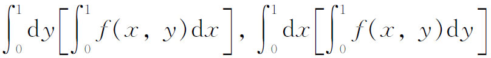
不一定是相等的。
托梅（Karl J．Thomae，1840—1921）把黎曼的积分理论推广到二元函数(32)。以后托梅在1878年(33)给出了有界函数的一个简单例子，表明上面第二个累次积分存在但第一个没有意义。
在柯西和托梅的例子中，二重积分都不存在。但在1883年(34)杜波依斯-雷蒙证明了即使二重积分存在，两个累次积分也不一定存在。在二重积分的情形，最有意义的推广也是由勒贝格做出的。